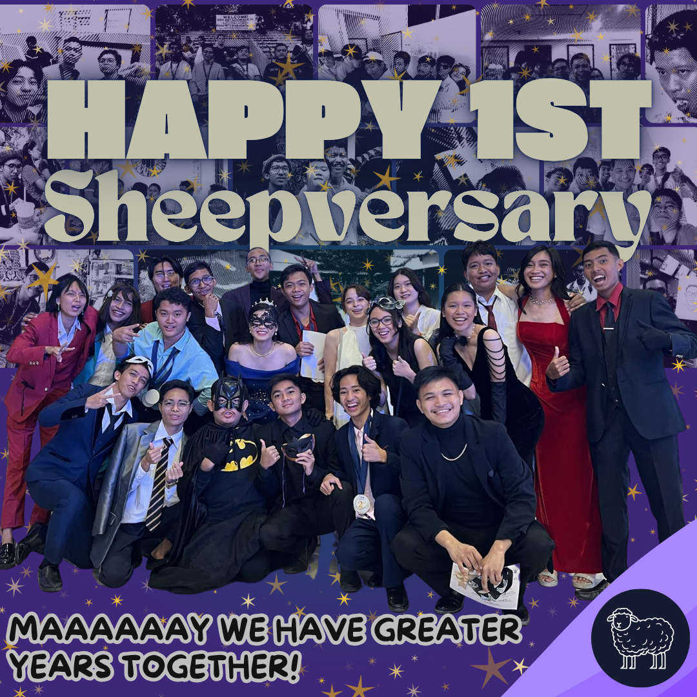
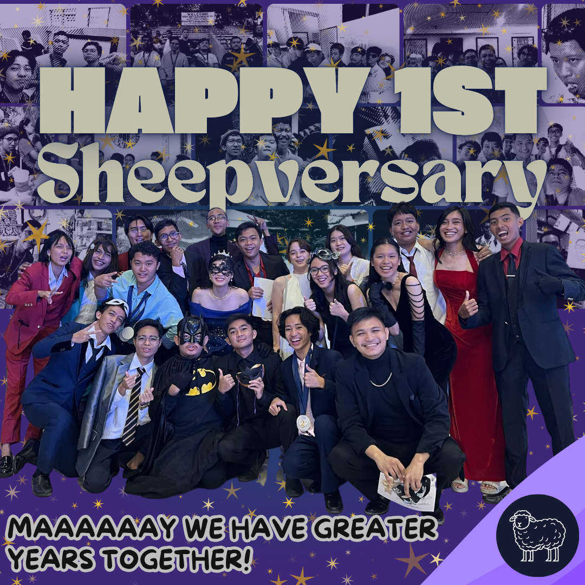
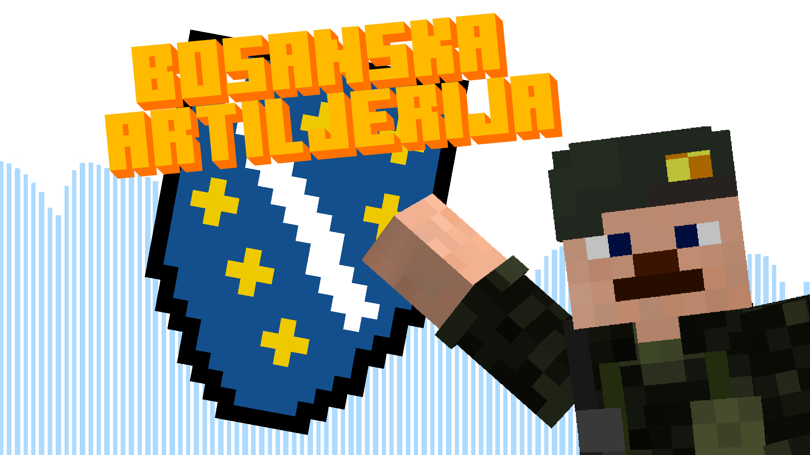

About Me

I am a highly creative and self-motivated graphic designer with 7 years of hands-on,
self taught experience in visual communication, image manipulation,
and digital content creation. Proficient in Adobe Photoshop, Adobe Illustrator,
and Canva, with a strong portfolio demonstrating expertise in infographics,
image editing, graphic design, publications, and YouTube thumbnail creation.
Eager to apply a keen eye for aesthetics and technical proficiency to contribute
to dynamic design projects.
Publications

 

YouTube Thumbnails

School Work